/painel/entrar — Diretoria, coordenadores e agentes. A Diretoria é levada automaticamente para /diretoria.
Aplicativo (membros)
/app/entrar — líderes e membros de apoio. Demonstração com quatro celulares lado a lado em /demo.
Contas de demonstração
Município fictício Vale Sereno – SP. Senha única Nupdec@2026. A lista completa está no documento Nupdec Conecta — Contas de acesso; as principais estão na seção 2.
Sumário
Visão geral: papéis e fluxo ponta a ponta
Acesso: endereços, contas e sessões
Diretoria: coordenações, áreas e gestores
Coordenador da Compdec: núcleos, áreas de risco, alertas, ocorrências e chat
Agente da Defesa Civil: acompanhamento e triagem
Líder do núcleo: pré-aprovação de cadastros
Membro de apoio: instalar, cadastrar, confirmar alertas, reportar e conversar
Modo de demonstração
Problemas comuns e respostas
1. Visão geral
O Nupdec Conecta fecha o ciclo do alerta entre a Defesa Civil e a comunidade organizada em Núcleos Comunitários (Nupdecs). A Defesa Civil dispara o alerta por área de risco no painel; o aplicativo do membro recebe a notificação, mostra a área no mapa e pede um toque em "Recebi e estou ciente"; o painel mostra, em tempo real, quem confirmou. No sentido inverso, o membro reporta ocorrências com foto e GPS, que caem no mapa da Compdec e no chat do núcleo para triagem. Tudo roda sobre o mesmo backend e as mesmas regras de acesso.
1.1 Papéis e responsabilidades
Papel
Onde entra
O que faz
O que não faz
diretorDiretoria
Painel → /diretoria
Cria e delimita coordenações (municipal, regional ou estadual) no mapa; cria as contas de coordenadores e agentes e as vincula a uma coordenação; acompanha a rede inteira (núcleos cobertos, membros, confirmação por coordenação).
Não dispara alertas nem aprova membros: isso é da coordenação local.
coordenadorCoordenador da Compdec
Painel → /painel
Cadastra áreas de risco e núcleos (polígonos no mapa); dispara alertas; acompanha confirmações; dá a aprovação final dos membros; desliga e reabre cadastros; define o líder do núcleo; faz triagem de ocorrências; responde no chat como Defesa Civil.
Não altera coordenações nem cria contas de gestores.
agenteAgente da Defesa Civil
Painel → /painel
Acompanha tudo do município (visão geral, núcleos, áreas, alertas); faz triagem de ocorrências; responde no chat dos núcleos; monta a prévia de um alerta para o coordenador.
Não dispara alertas, não cria ou edita núcleos e áreas, não decide aprovações.
líderLíder do núcleo
Aplicativo → /app
Tudo que o membro faz, mais a pré-aprovação (ou rejeição) dos novos cadastros do seu núcleo. Aparece com o escudo na lista do núcleo e com telefone visível aos membros.
Não dá a aprovação final: a palavra final é do coordenador.
membroMembro de apoio
Aplicativo → /app
Recebe e confirma alertas; vê a área do alerta e do núcleo no mapa (com satélite); reporta ocorrências com foto e localização; conversa no chat do núcleo; consulta quem está na rede.
Só vê o próprio núcleo. Até ser aprovado, não recebe alertas.
1.2 Fluxo ponta a ponta
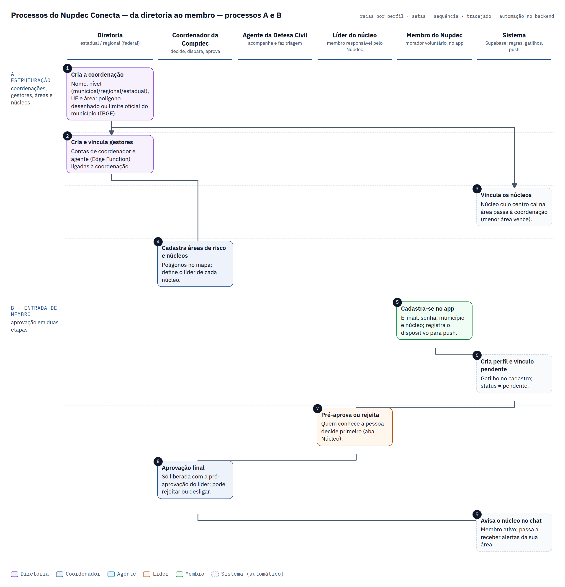
Figura 1. Parte 1 do processo: a Diretoria estrutura a rede (coordenações e gestores); o coordenador prepara o município (áreas de risco e núcleos); o morador se cadastra no app; o líder pré-aprova e o coordenador decide.
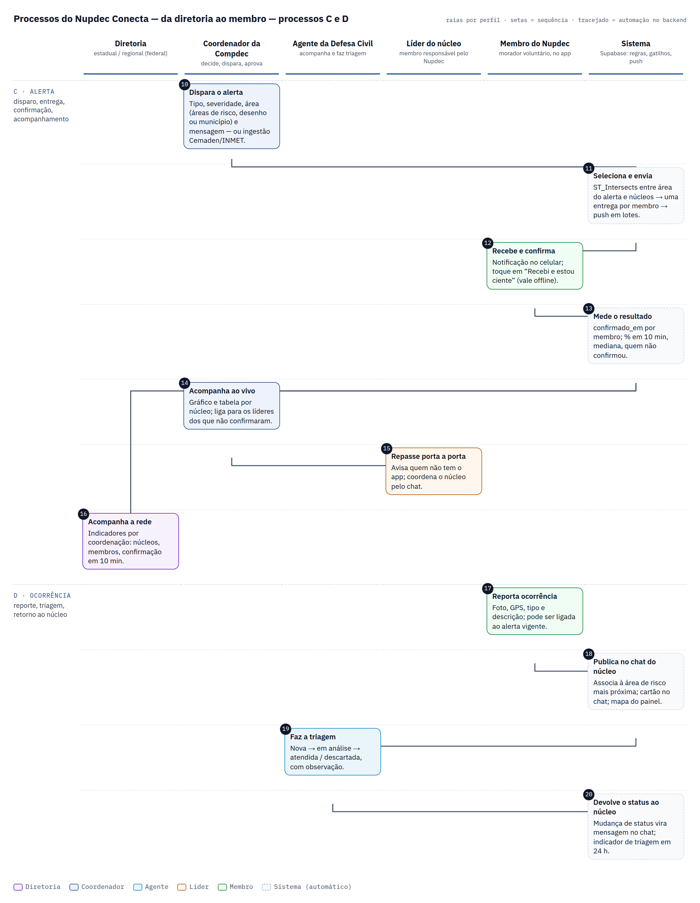
Figura 2. Parte 2 do processo: alerta disparado por área → push no celular → confirmação → acompanhamento; ocorrência reportada → chat do núcleo e mapa da Compdec → triagem.
1.3 Ciclo de vida de um cadastro
Situação
Como chega aqui
O que acontece
pendente
Morador criou a conta no app e escolheu o núcleo.
Aparece para o líder na aba Núcleo em "Cadastros em andamento" e para o coordenador na aba Pendentes do núcleo, marcado como "aguardando o líder". Não recebe alertas.
pré-aprovado
Líder tocou em "Pré-aprovar".
O coordenador passa a ver o botão Aprovar. O app mostra ao membro "Aguardando a aprovação final da Defesa Civil".
aprovado
Coordenador clicou em Aprovar.
Entra na lista do núcleo, recebe alertas e usa o chat. O chat do núcleo recebe a mensagem automática "Fulano entrou no núcleo".
rejeitado
Líder ou coordenador rejeitou.
O coordenador pode Reabrir o cadastro, que volta a pendente.
Simulador do aplicativo Android. O APK nativo só será gerado se o projeto for aprovado; a página inicial explica isso.
Demonstração
https://nupdec-conecta.mundodosdadosbr.com/demo
Quatro celulares, cada um com sessão própria.
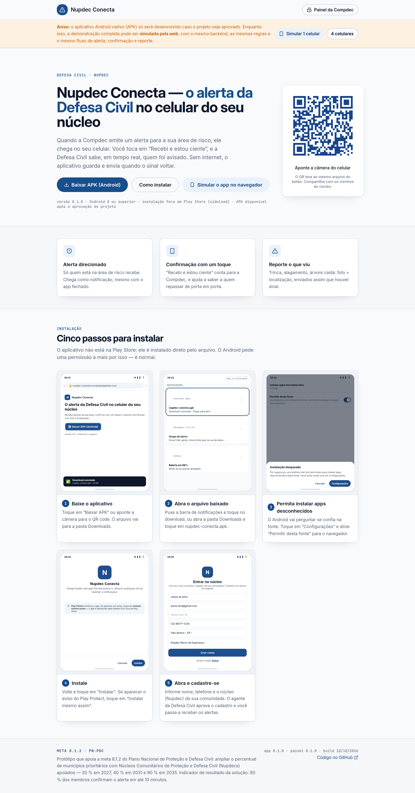
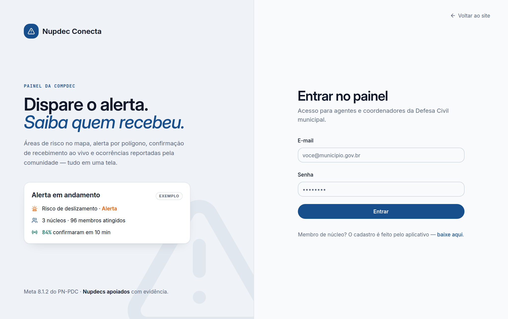
Figura 3. À esquerda, a página inicial com os cinco passos de instalação e a tarja sobre o APK; à direita, a tela de entrada do painel.
2.2 Contas de demonstração
Papel
Nome
Usuário (e-mail)
Senha
Diretoria
Helena Castro
diretoria.sp@valesereno.exemplo
Nupdec@2026
Coordenador
Marcos Vieira
coordenador@valesereno.exemplo
Nupdec@2026
Agente
Patrícia Ramos
agente1@valesereno.exemplo
Nupdec@2026
Líder (Morro da Esperança)
Maria das Dores
lider.esperanca@valesereno.exemplo
Nupdec@2026
Líder (Bairro Novo)
Ana Souza
membro78@valesereno.exemplo
Nupdec@2026
Membro de apoio
Diego Souza
membro03@valesereno.exemplo
Nupdec@2026
Cadastros para testar a aprovação
Carla Lima e Sônia Costa (Bairro Novo) e Marta Pereira (Jardim das Águas) estão pendentes; Gisele Oliveira (Vila do Córrego) está pré-aprovada.
2.3 Sessões, senha e saída
O painel e o aplicativo guardam sessões separadas no mesmo navegador: dá para ficar com o coordenador no painel e um membro no app ao mesmo tempo.
Para sair do painel, use o ícone ao lado do nome no rodapé da barra lateral. No app, aba Perfil → Sair.
A senha de um gestor é definida pela Diretoria ao criar a conta (senha temporária). A senha de um membro é a que ele escolheu no cadastro. O protótipo não tem "esqueci a senha": peça à Diretoria (gestores) ou crie um novo cadastro (membros).
O e-mail precisa ter um domínio válido (por exemplo gmail.com); o protótipo não exige confirmação por e-mail.
3. Diretoria diretor
A Diretoria estrutura a rede acima das Compdecs. Entre com a conta de Diretoria em /painel/entrar; o sistema abre a Visão da diretoria. A barra lateral tem Visão da diretoria, Coordenações, Gestores e um atalho para o Painel operacional.
3.1 Visão da diretoria
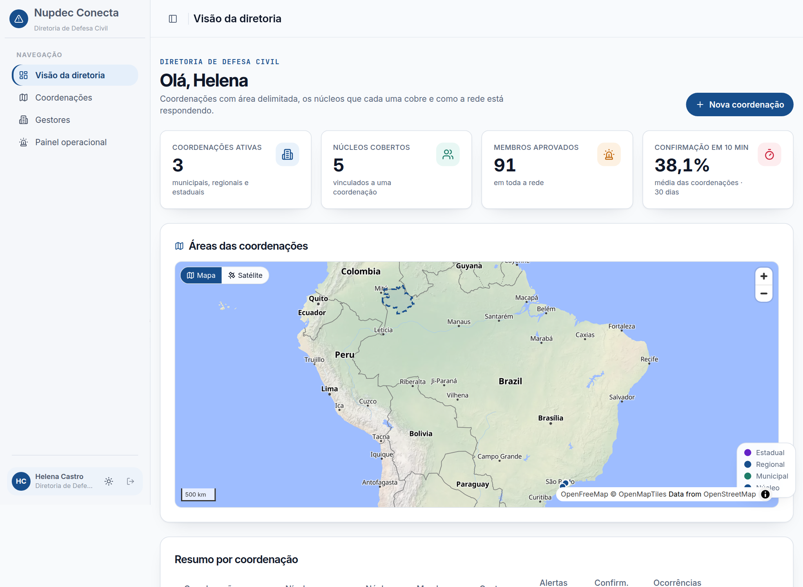
Figura 4. Quatro números (coordenações ativas, núcleos cobertos, membros aprovados, confirmação em 10 min), o mapa das áreas de todas as coordenações e o resumo por coordenação com nível, núcleos, membros, gestores, alertas, confirmação e ocorrências. O botão abrir leva ao detalhe.
3.2 Criar uma coordenação
Menu Coordenações → + Nova coordenação.
Preencha Nome, Nível (Municipal/Compdec, Regional ou Estadual), Estado (UF) e o Município de referência (sede). A lista de municípios muda conforme a UF e contém os 5.570 municípios do IBGE.
Defina a Área de abrangência: clique em Usar limite oficial do município (IBGE) para carregar o contorno oficial, ou em Desenhar e clique no mapa ponto a ponto (duplo clique fecha o polígono). Limpar apaga o desenho.
Opcional: descrição e status (Ativa/Inativa).
Criar coordenação.
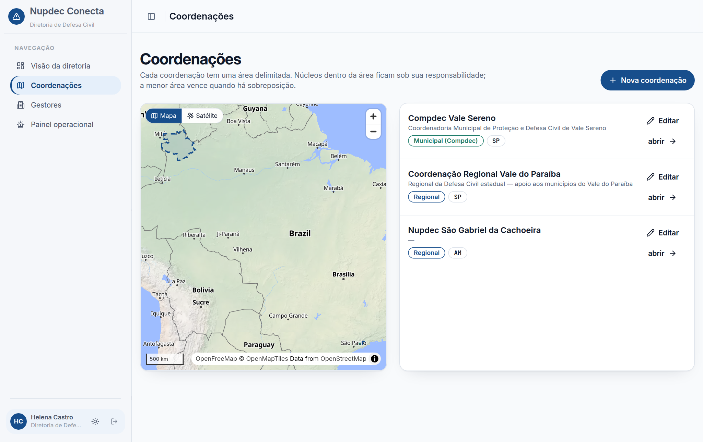
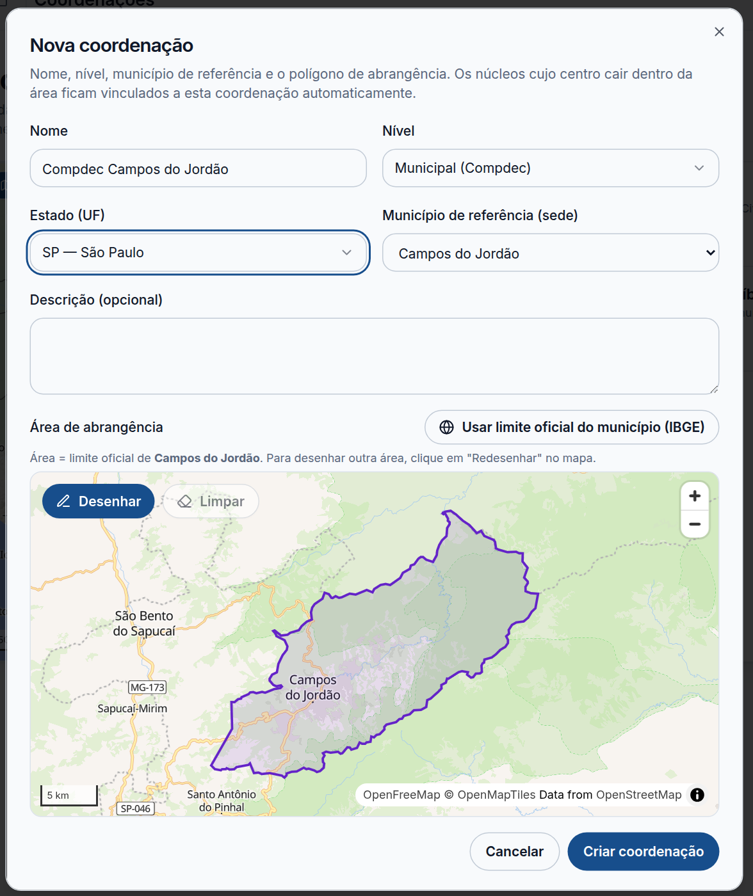
Figura 5. Lista de coordenações com o mapa das áreas (esquerda) e o formulário de nova coordenação já com o limite oficial de Campos do Jordão carregado do IBGE (direita).
Vínculo automático. Um núcleo pertence à coordenação cuja área contém o centro do seu polígono. Quando duas áreas se sobrepõem (por exemplo, uma regional e uma municipal), vence a menor. Por isso a Diretoria não precisa vincular núcleos à mão: basta a área estar certa.
3.3 Detalhe da coordenação
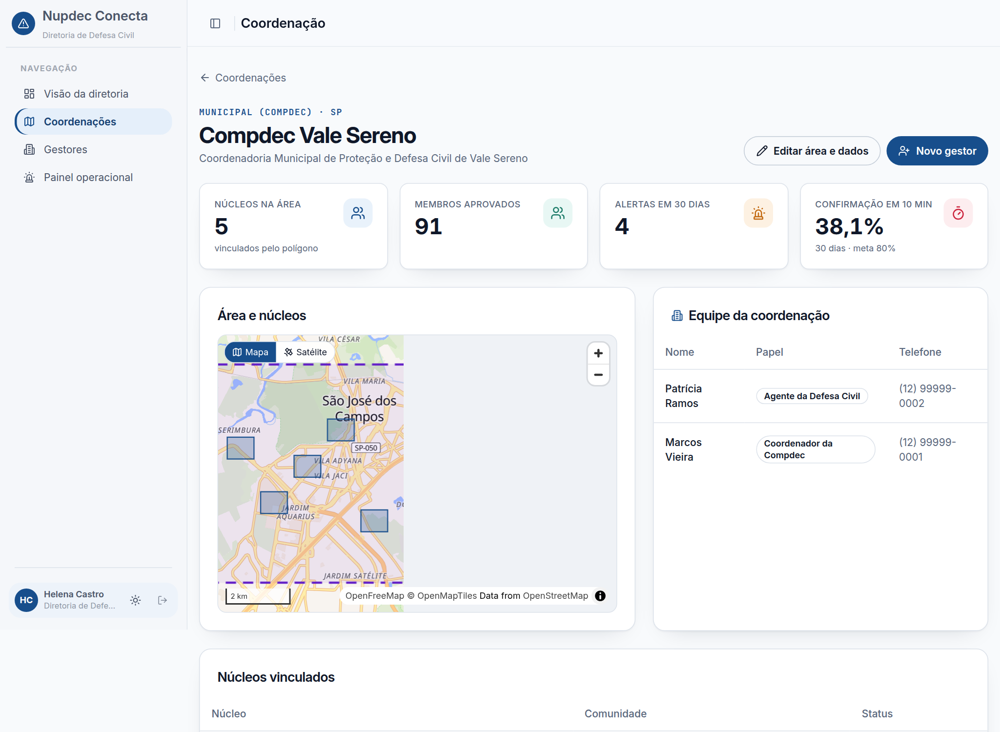
Figura 6. Detalhe da Compdec Vale Sereno: indicadores, mapa da área com os núcleos, equipe da coordenação (com telefone) e núcleos vinculados. Editar área e dados reabre o formulário; Novo gestor cria uma conta já vinculada a esta coordenação.
3.4 Criar e vincular gestores (coordenadores e agentes)
Menu Gestores → + Novo gestor (ou o botão de mesmo nome no detalhe da coordenação).
Preencha Nome, E-mail (será o usuário), Senha temporária, Telefone, Papel (Coordenador ou Agente) e a Coordenação.
Criar conta. A conta é criada no servidor pela função criar-gestor, que verifica se quem pede é da Diretoria. Entregue o e-mail e a senha temporária ao gestor.
Para mudar um gestor de coordenação, use a caixa Coordenação na própria linha da lista de gestores.
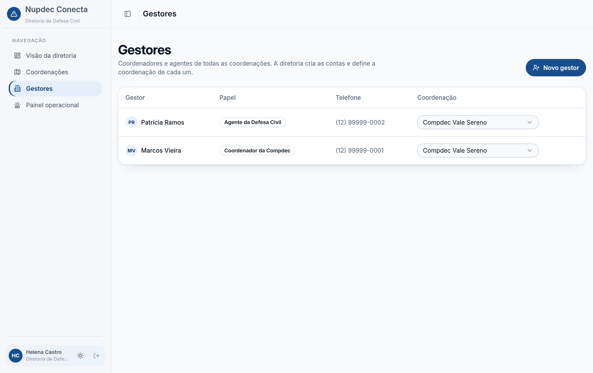
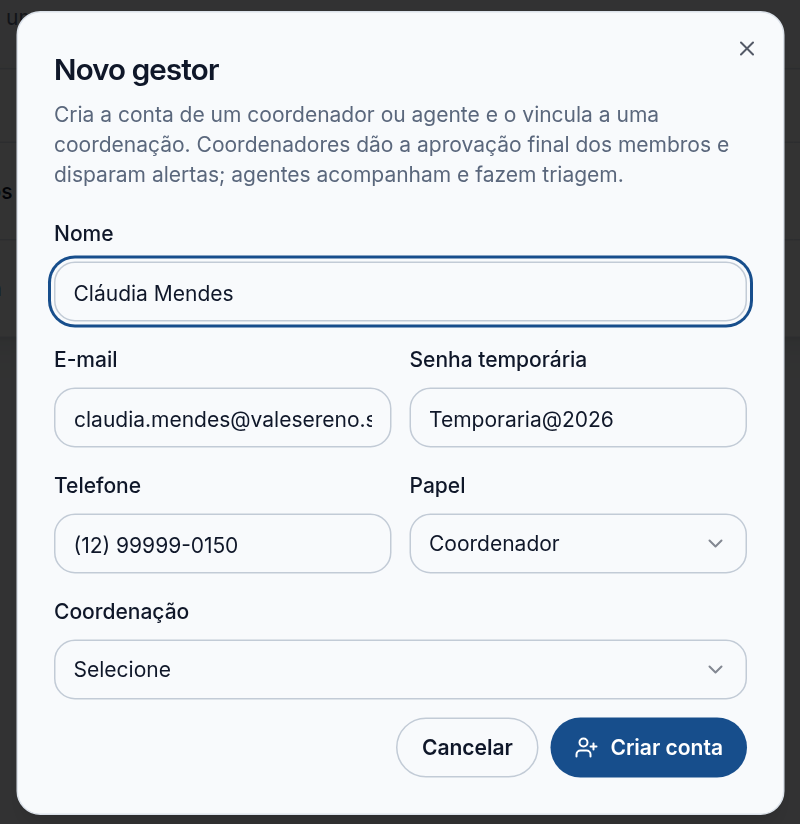
Figura 7. Lista de gestores com a coordenação de cada um (esquerda) e o formulário de criação de conta (direita).
Regra de ouro. Cada coordenador e agente enxerga só o seu município/coordenação. Se um gestor "não vê nada" no painel, confira se ele está vinculado à coordenação certa.
4. Coordenador da Compdec coordenador
Entre em /painel/entrar. A barra lateral tem Visão geral, Alertas, Núcleos, Áreas de risco, Ocorrências e Chat dos núcleos. Recomendação de preparação do município, nesta ordem: áreas de risco → núcleos → líderes → aprovação dos membros. Só depois disso um alerta tem a quem chegar.
4.1 Visão geral
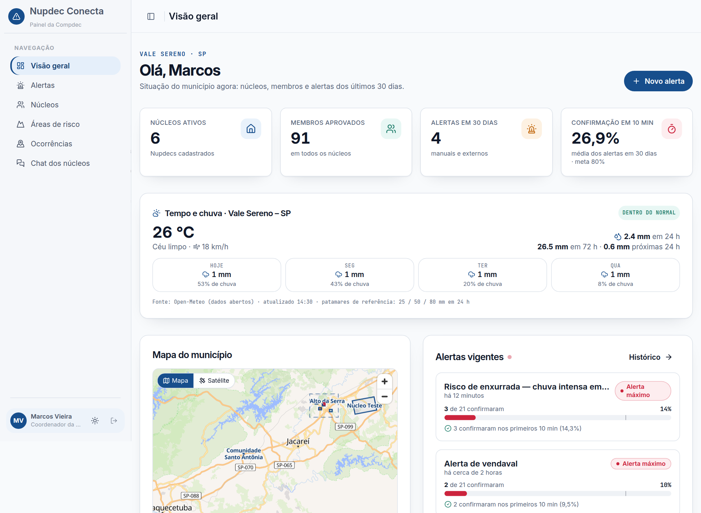
Figura 8. Núcleos ativos, membros aprovados, alertas em 30 dias e confirmação em 10 min (indicador da meta); cartão de tempo e chuva do município (Open-Meteo, com limiares de 25/50/80 mm em 24 h); mapa com núcleos e áreas de risco; alertas vigentes com a barra de confirmação. O botão + Novo alerta fica no topo.
4.2 Áreas de risco
Menu Áreas de risco → + Nova área.
Preencha Nome, Tipo (deslizamento, inundação, enxurrada…), Nível de risco (baixo a muito alto) e a Fonte (setorização CPRM, vistoria da Compdec).
Clique em Desenhar e marque o polígono no mapa. Use Satélite para enxergar encostas e margens.
Salvar. Para alterar ou excluir, use o lápis e a lixeira no cartão da área.
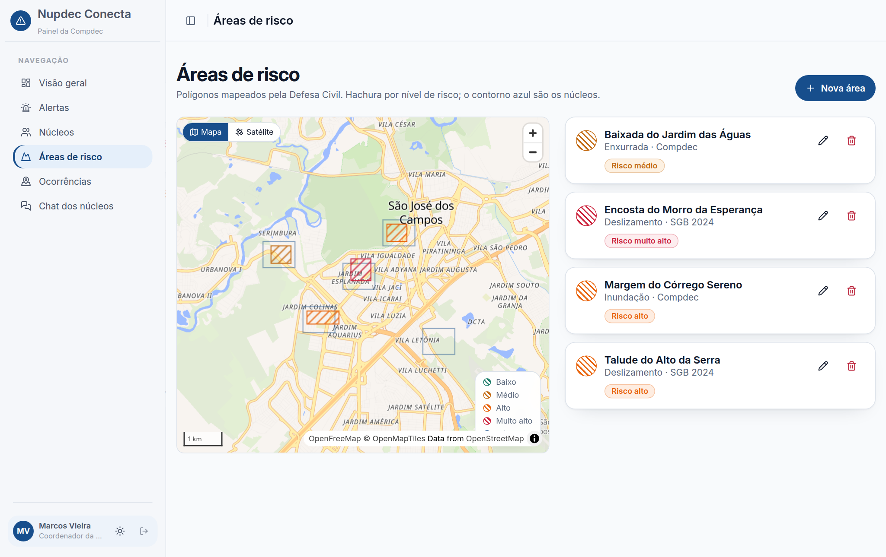
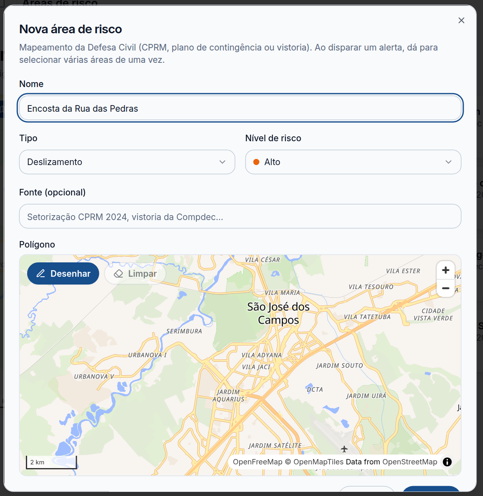
Figura 9. Mapa com hachura por nível de risco e lista das áreas (esquerda); formulário de nova área (direita).
4.3 Núcleos
Menu Núcleos → + Novo núcleo. Informe Nome, Comunidade/bairro, Status e desenhe a Área do núcleo. Esse polígono define quem recebe cada alerta: um alerta atinge o núcleo quando a área do alerta cruza a área do núcleo.
Na lista, cada cartão tem Ativar/Inativar, Editar e Membros.
Abra o núcleo para ver indicadores, mapa, e a lista de membros nas abas Pendentes e Todos.
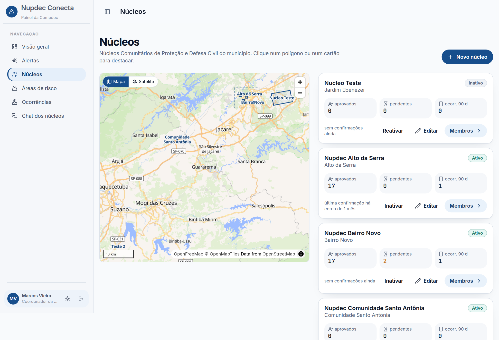
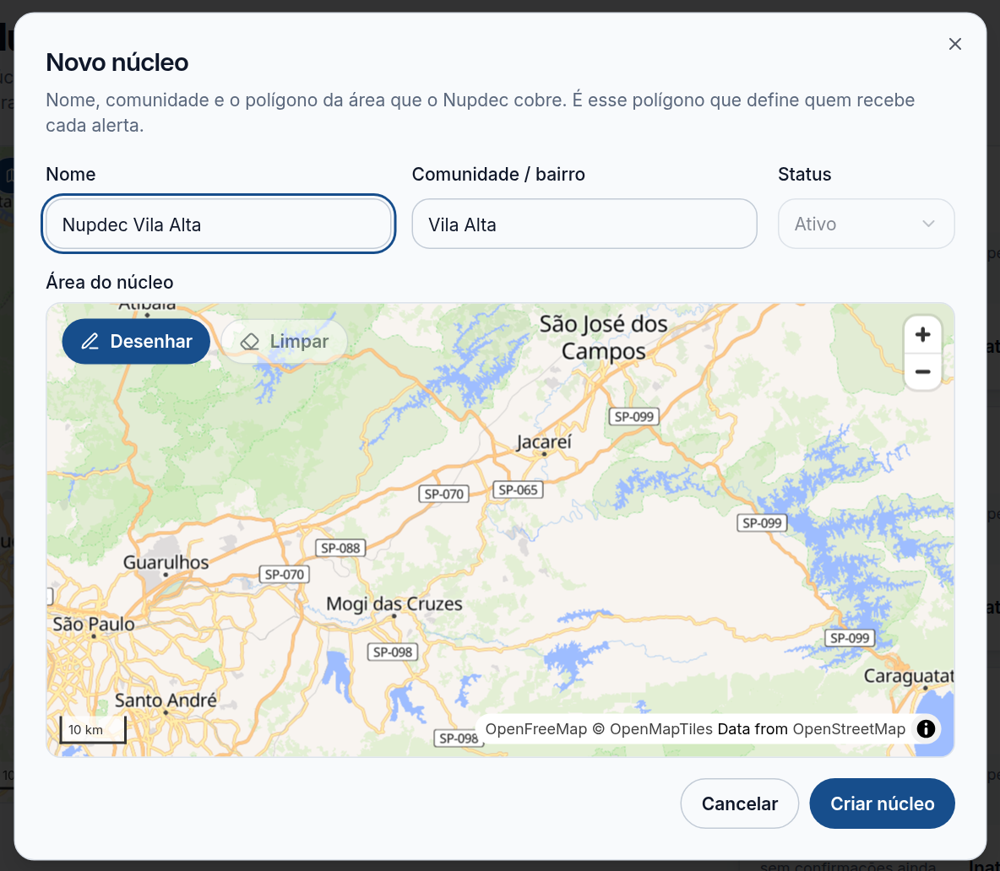
Figura 10. Lista de núcleos com mapa (esquerda) e formulário de novo núcleo (direita).
Aprovar, rejeitar, desligar, reabrir e definir o líder
Na aba Pendentes do núcleo aparecem os cadastros novos. Enquanto o líder não pré-aprova, a linha mostra "aguardando o líder" e o botão Aprovar fica desativado. Depois da pré-aprovação, clique em Aprovar (ou Rejeitar). Na aba Todos, cada membro aprovado tem Desligar; um rejeitado ou desligado tem Reabrir. O botão de escudo torna o membro líder do núcleo (um por núcleo).
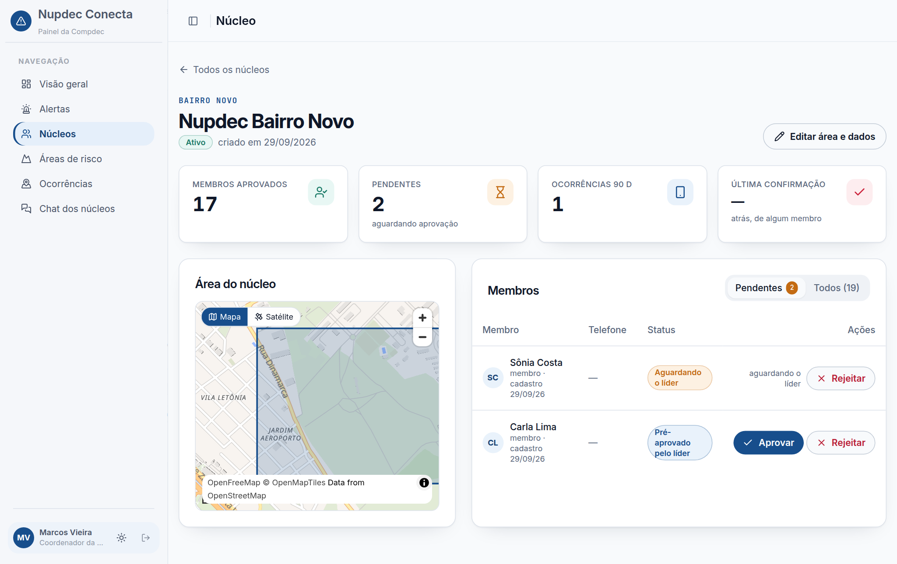
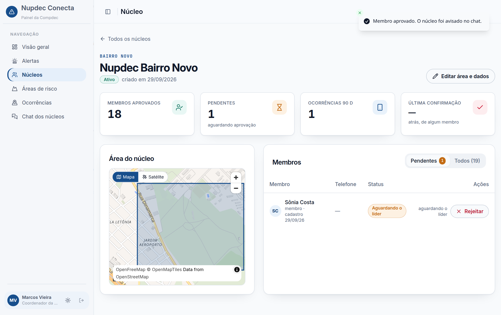
Figura 11. Esquerda: Sônia Costa ainda aguarda o líder e Carla Lima já foi pré-aprovada, com o botão Aprovar liberado. Direita: depois do clique, Carla entra na lista de aprovados e o chat do núcleo recebe o aviso.
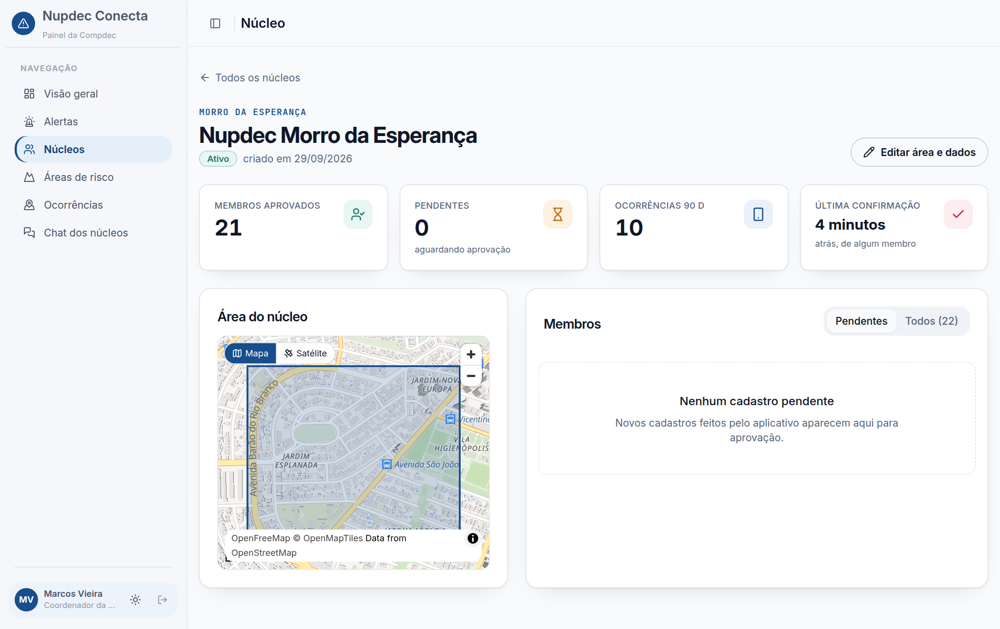
Figura 12. Detalhe do Nupdec Morro da Esperança: indicadores, área do núcleo e a lista de membros.
4.4 Disparar um alerta
Alertas → + Novo alerta (ou o botão na Visão geral).
Tipo e severidade: escolha o tipo (deslizamento, inundação, vendaval…) e a severidade (Alerta ou Alerta máximo).
Área do alerta: marque uma ou mais áreas de risco, ou Desenhar um polígono, ou Município inteiro. A prévia do alcance mostra na hora quantos núcleos e membros serão atingidos e quais núcleos.
Título e mensagem: escreva ou use Usar modelo do tipo escolhido. O cartão "Como chega no celular" mostra a prévia da notificação.
Disparar alerta e confirme na caixa "Disparar para N membros?". O sistema abre o acompanhamento.
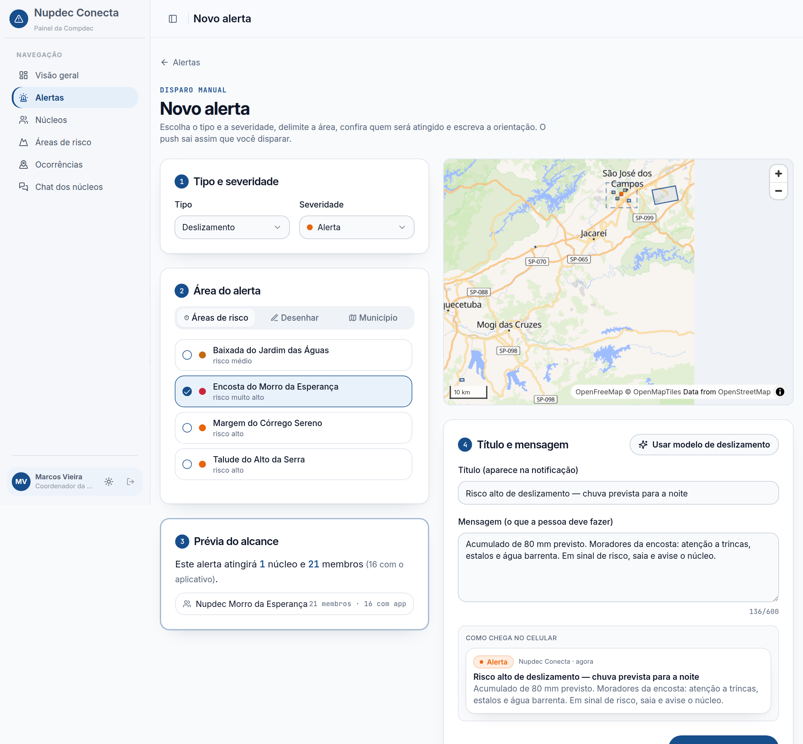
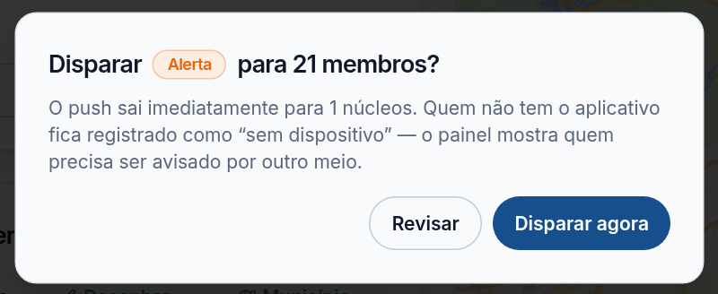
Figura 13. Formulário do novo alerta com a área "Encosta do Morro da Esperança" marcada e a prévia "1 núcleo, 21 membros" (esquerda); caixa de confirmação do disparo (direita).
Quem não tem o aplicativo fica registrado como "sem dispositivo" e aparece na lista "Não confirmaram" do acompanhamento, para ser avisado por outro meio (telefone, rádio, visita).
4.5 Acompanhar e encerrar o alerta
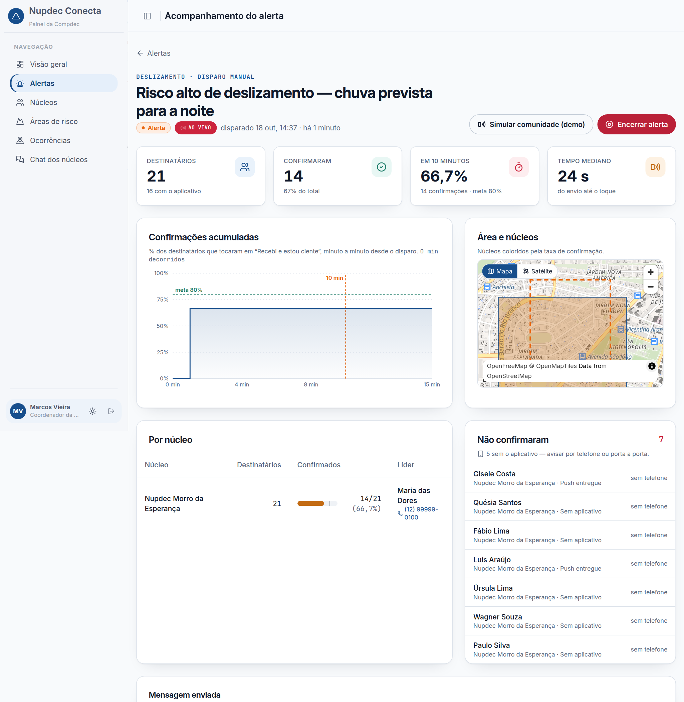
Figura 14. Acompanhamento ao vivo: destinatários, confirmaram, confirmação em 10 minutos (meta 80%), tempo mediano; gráfico de confirmações acumuladas com a linha dos 10 min; área e núcleos no mapa; tabela por núcleo com o líder; lista de quem não confirmou; mensagem enviada.
A tela atualiza sozinha a cada confirmação (Realtime).
Simular comunidade (demo) confirma cerca de 80% dos membros com dispositivo simulado. Serve só para demonstração; nunca mexe em dispositivos reais.
Encerrar alerta tira o alerta da lista de vigentes no app. As confirmações continuam contando para o indicador.
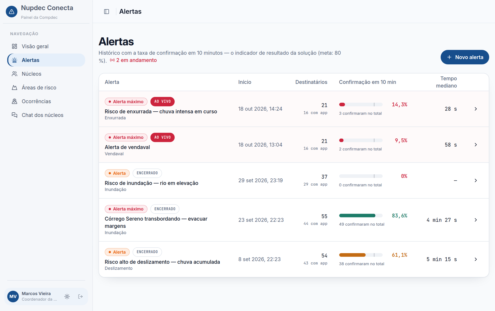
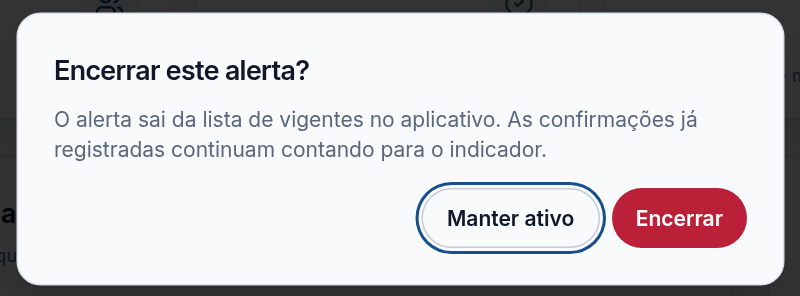
Figura 15. Histórico de alertas com a taxa de confirmação em 10 min de cada um (esquerda) e a confirmação de encerramento (direita).
4.6 Ocorrências e triagem
Menu Ocorrências. Filtre por status, tipo, núcleo e período; os cartões coloridos no topo filtram por status com um clique.
Clique num ponto do mapa ou num cartão da lista para abrir a ocorrência: foto, descrição, quem reportou, núcleo, coordenadas e a área de risco onde caiu.
Em Triagem, mude o Status (Nova → Em análise → Atendida ou Descartada) e escreva a Observação do que a equipe verificou. Salvar triagem.
A mudança de status vai automaticamente para o chat do núcleo que reportou, com a observação.
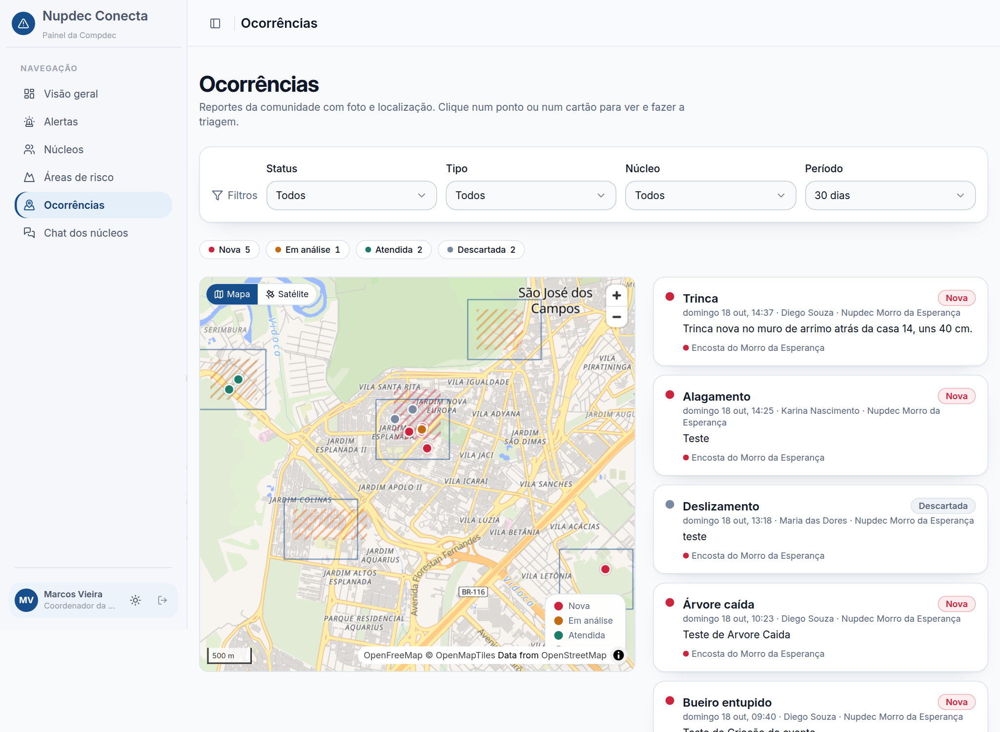
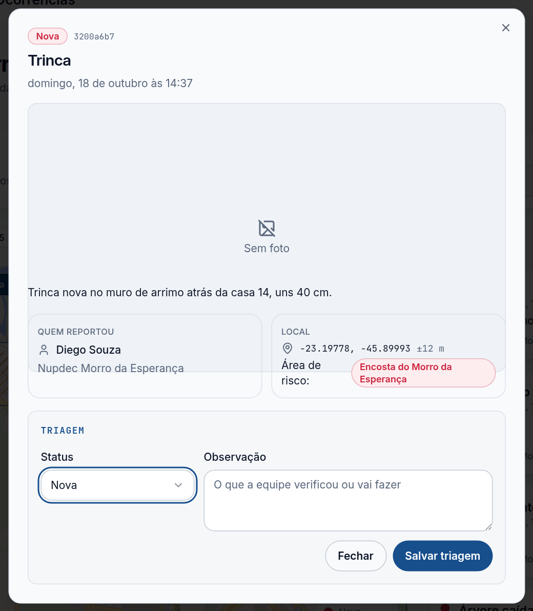
Figura 16. Mapa e lista de ocorrências (esquerda); detalhe com os campos de triagem (direita).
4.7 Chat dos núcleos
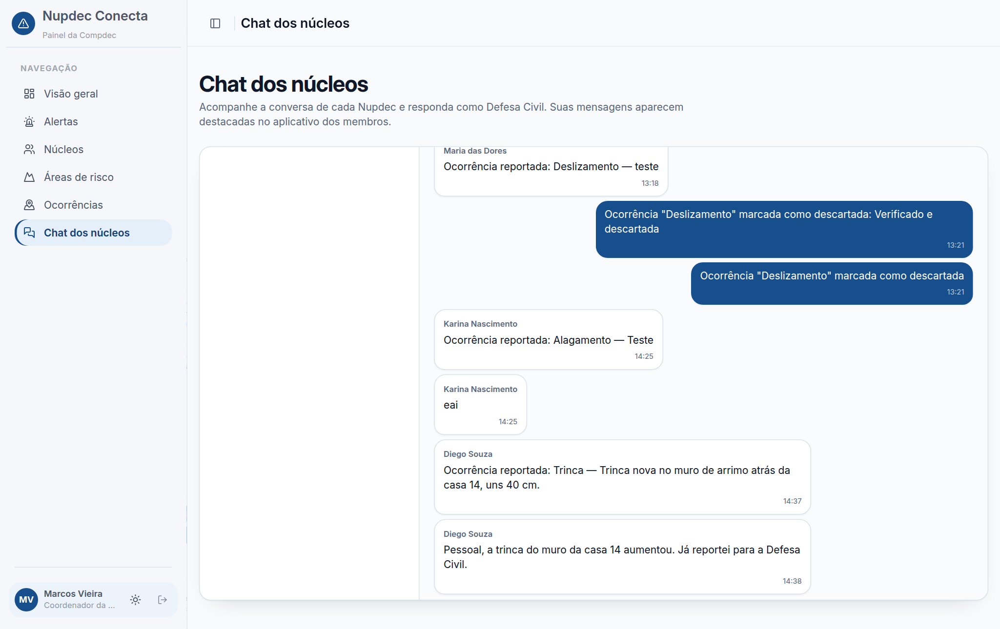
Figura 17. Lista de núcleos ordenada pela última mensagem; conversa em tempo real; o que a Compdec escreve aparece destacado como "Defesa Civil" no aplicativo. Ocorrências e aprovações entram como cartões automáticos.
5. Agente da Defesa Civil agente
O agente usa o mesmo painel do coordenador, com as mesmas telas de consulta. As diferenças são de permissão, aplicadas no servidor:
Ação
Agente
Coordenador
Ver visão geral, núcleos, áreas de risco, alertas e acompanhamento
Figura 18. Agente Patrícia Ramos na visão geral (esquerda) e fazendo a triagem de uma ocorrência (direita).
Rotina sugerida do agente: ao começar o turno, abra Ocorrências filtrando "Nova"; faça a triagem de cada uma; durante um alerta, acompanhe a tela do alerta e ligue para quem está em "Não confirmaram"; use o chat para orientar o núcleo.
6. Líder do núcleo líder
O líder entra no aplicativo (/app/entrar) como qualquer membro. O que muda é a aba Núcleo: abaixo da lista de quem está na rede aparece a seção Cadastros em andamento.
Aba Núcleo, role até Cadastros em andamento.
Cada cadastro novo aparece com a etiqueta "Aguardando o líder" e os botões Pré-aprovar e Rejeitar. Confirme que a pessoa mora na comunidade antes de pré-aprovar.
Depois do toque, a etiqueta muda para "Pré-aprovado pelo líder" e o texto "Aguardando a aprovação final da Defesa Civil". A decisão final é do coordenador no painel (seção 4.3).
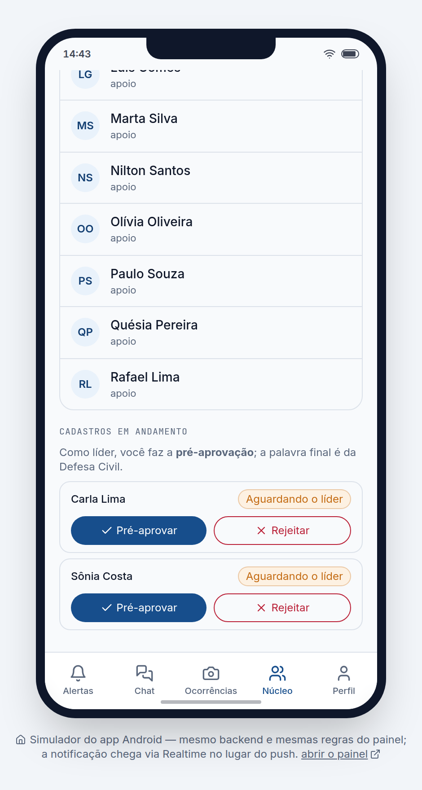
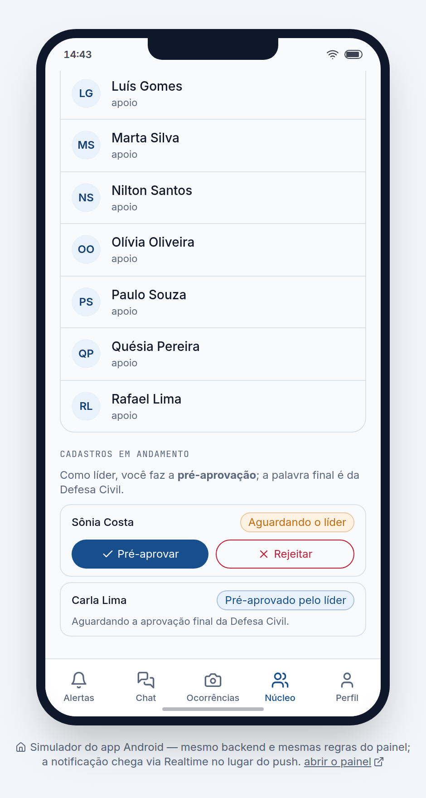
Figura 19. Líder Ana Souza (Bairro Novo): dois cadastros aguardando (esquerda); Carla Lima pré-aprovada e aguardando a Defesa Civil (direita).
No chat, o líder é o ponto de contato da comunidade: as mensagens da Defesa Civil chegam destacadas e as ocorrências do núcleo aparecem como cartões. O telefone do líder fica visível aos membros na aba Núcleo.
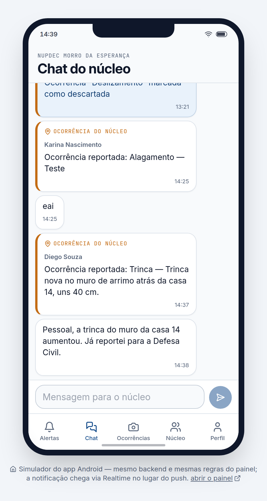
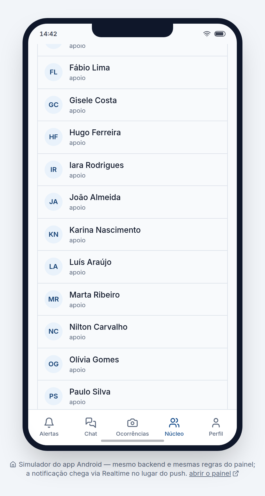
Figura 20. Chat do núcleo visto pela líder (esquerda) e a lista de membros do núcleo (direita).
7. Membro de apoio membro
7.1 Instalar e criar a conta
No protótipo, o aplicativo roda no navegador em /app. Quando o APK existir, a instalação segue os cinco passos da página inicial: baixar, abrir o arquivo, permitir "instalar apps desconhecidos", instalar, abrir e cadastrar.
Abra /app/entrar e toque em Criar conta (ou acesse /app/cadastrar).
Preencha Nome completo, E-mail, Senha (mínimo 6), Telefone (opcional), Município e o Núcleo da sua comunidade (só aparecem municípios que já têm núcleo).
Criar conta. A conta entra como pendente: o líder pré-aprova e a Defesa Civil confirma. Até lá o app mostra que o cadastro está em análise e não chegam alertas.
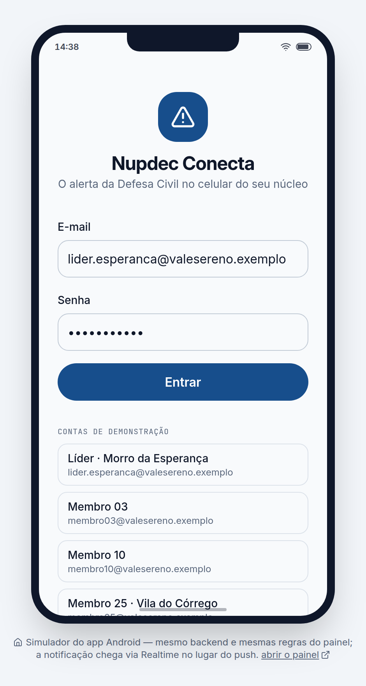
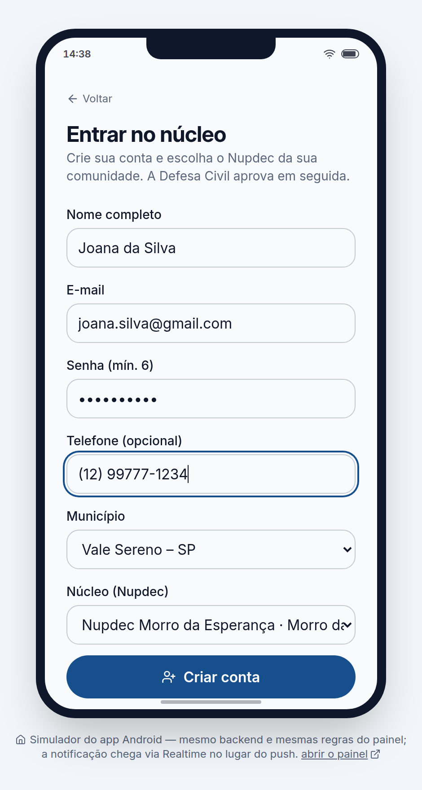
Figura 21. Tela de entrada do aplicativo, com atalhos das contas de demonstração (esquerda), e o cadastro com escolha de município e núcleo (direita).
7.2 Receber e confirmar um alerta
Com o app aberto ou em segundo plano, a notificação aparece no topo com som e vibração. Toque nela, ou abra a aba Alertas e toque no cartão com "Toque para confirmar".
Leia a mensagem e veja no mapa a área do alerta (hachura) em relação ao seu núcleo (contorno azul). O botão Satélite troca o fundo por imagem de satélite.
Toque em Recebi e estou ciente. A tela mostra "Recebimento confirmado" com o horário; a Defesa Civil vê sua confirmação na hora.
Siga a orientação do alerta e avise os vizinhos sem celular.
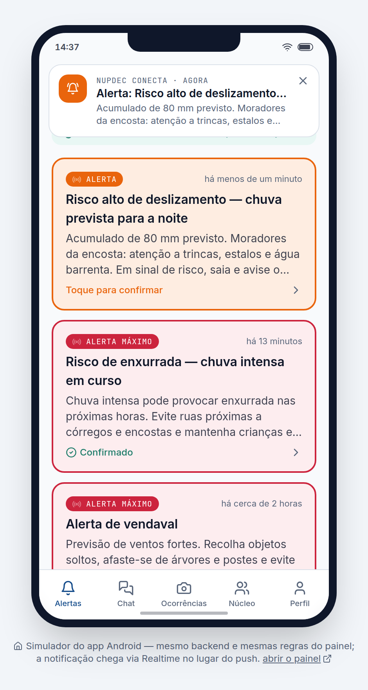
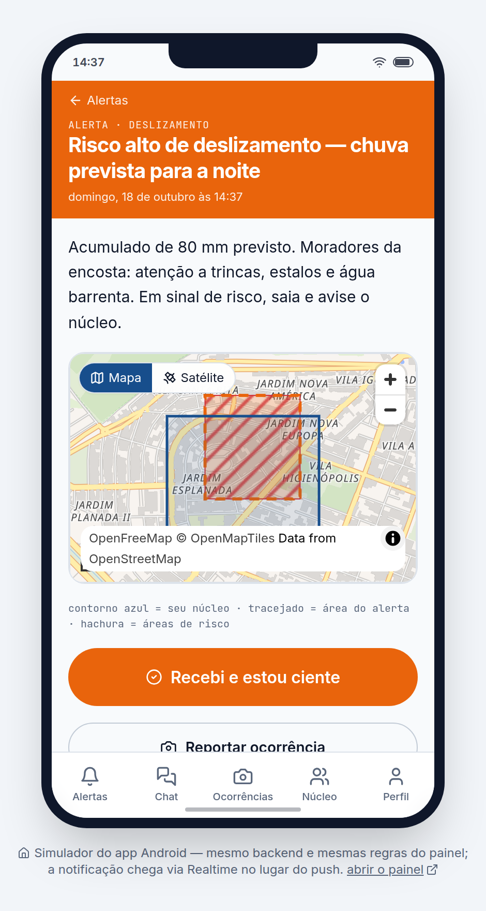
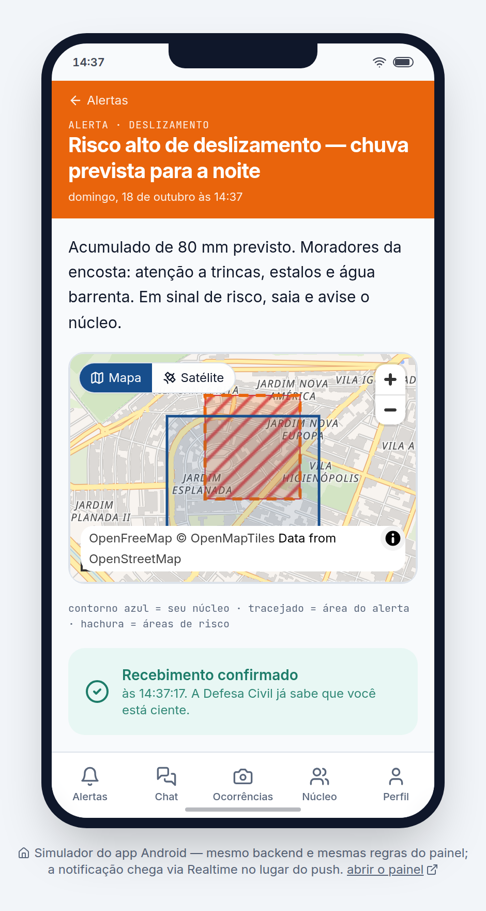
Figura 22. Notificação chegando sobre a aba Alertas; detalhe do alerta com o mapa e o botão de confirmação; recebimento confirmado.
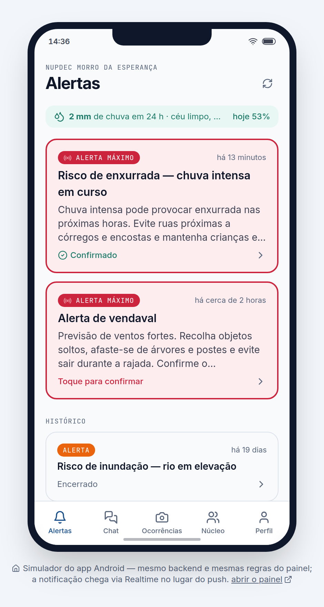
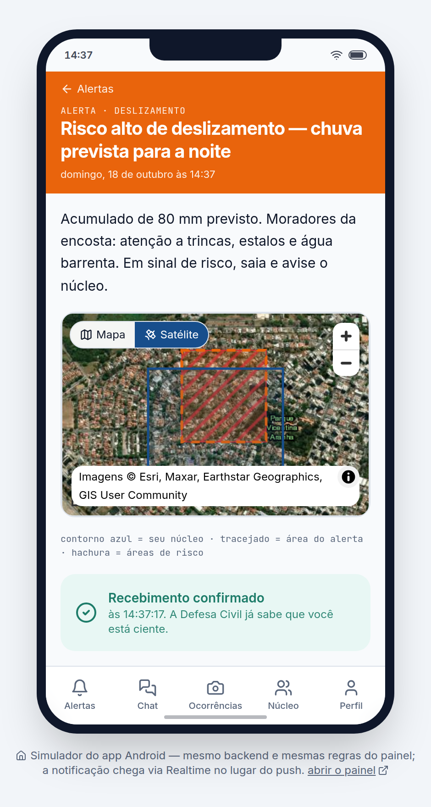
Figura 23. Aba Alertas com os vigentes (um já confirmado, outro "Toque para confirmar") e o histórico (esquerda); a mesma área sobre a imagem de satélite (direita).
7.3 Reportar uma ocorrência
Aba Ocorrências → Reportar, ou o atalho "Reportar ocorrência" dentro de um alerta.
Tirar foto ou escolher da galeria (opcional, mas ajuda a triagem).
Escolha o que você viu: trinca, deslizamento, alagamento, árvore caída, bueiro entupido ou outro.
Descreva em uma frase: onde, o que e desde quando.
Confira a localização: o app usa o GPS do celular; se o GPS estiver negado ou fora do município, ele usa uma posição dentro do seu núcleo e avisa "posição simulada". O ponto aparece no mapa.
Enviar para a Defesa Civil. A ocorrência entra na lista como "Nova", aparece no mapa da Compdec e no chat do seu núcleo. Quando a Defesa Civil fizer a triagem, o status muda na lista e no chat.
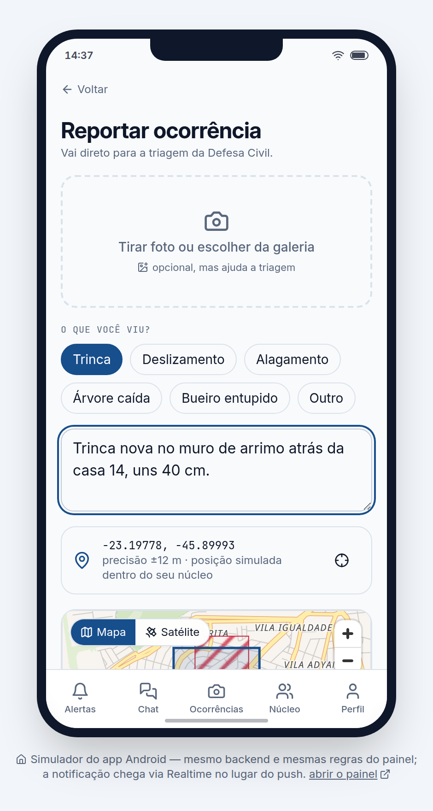
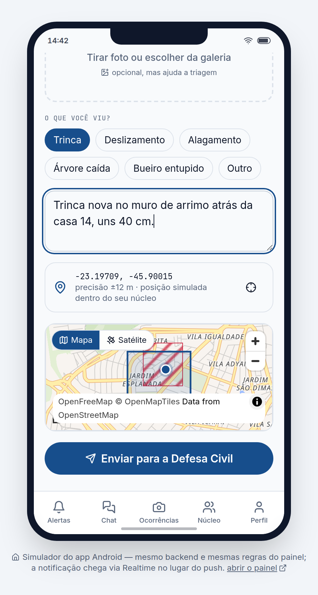
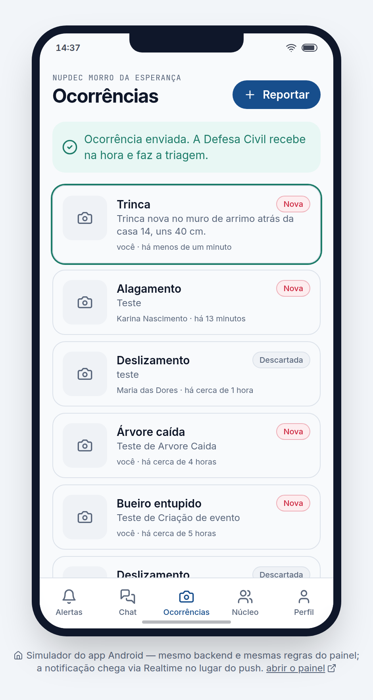
Figura 24. Formulário de reporte (tipo e descrição), localização com mapa e botão de envio, e a lista com a ocorrência enviada.
7.4 Chat do núcleo
Aba Chat. Escreva na caixa "Mensagem para o núcleo" e toque em enviar (ou Enter). Só membros aprovados do seu núcleo e a Defesa Civil do município leem. Mensagens da Defesa Civil vêm destacadas; ocorrências e aprovações entram como cartões automáticos.
7.5 Núcleo e perfil
Núcleo: mapa da área do núcleo (com satélite), número de membros ativos, nome do líder com telefone e a lista de quem está na rede.
Perfil: seus dados, núcleo, situação do cadastro, versão do app e o dispositivo registrado para push. Sair encerra a sessão.
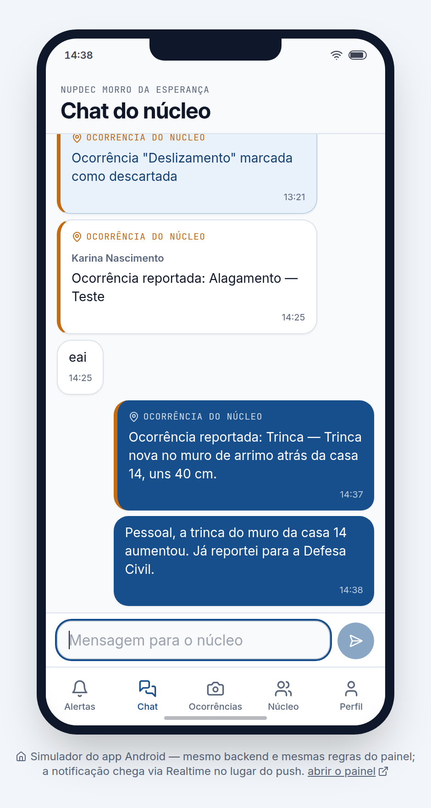
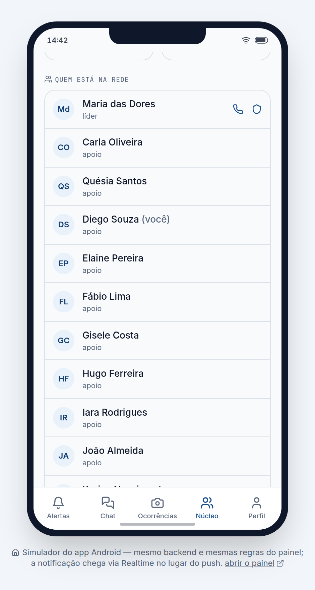
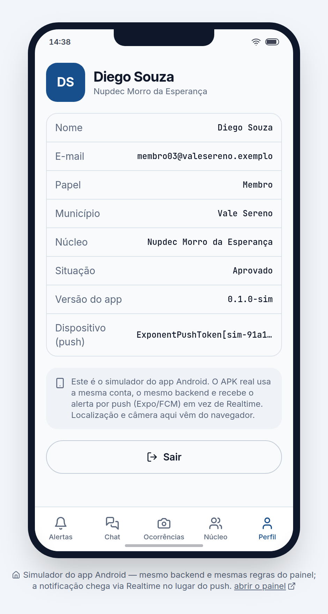
Figura 25. Chat do núcleo, lista do núcleo e perfil do membro.
8. Modo de demonstração
Para mostrar o ciclo completo numa única tela:
Abra /demo: quatro celulares, cada um com sessão própria. Entre, por exemplo, como líder (Morro da Esperança) no primeiro, dois membros do mesmo núcleo e um membro de outro núcleo (Vila do Córrego). A tela de entrada tem atalhos para essas contas.
Em outra aba, entre no painel como coordenador e dispare um alerta na "Encosta do Morro da Esperança". Os três primeiros celulares recebem; o quarto não (está fora da área).
Confirme em um ou dois celulares, clique em Simular comunidade (demo) no acompanhamento e mostre o gráfico subindo.
Reporte uma ocorrência num celular; mostre-a no mapa da Compdec, faça a triagem e mostre o cartão chegando no chat do núcleo.
Encerre o alerta.
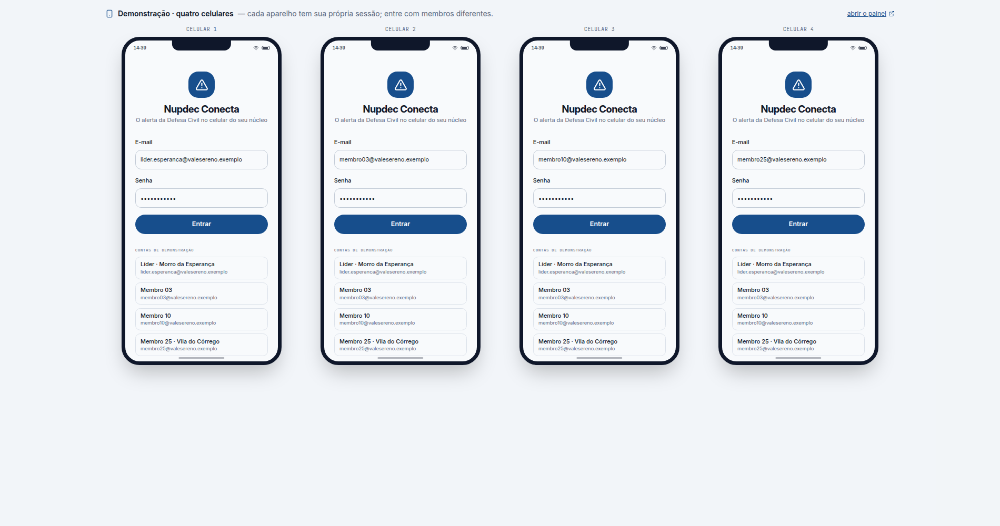
Figura 26. Modo de demonstração com quatro celulares lado a lado.
A notificação no simulador chega por Realtime (assinatura da tabela de entregas), no lugar do push do Expo. O token ExponentPushToken[sim-…] identifica um dispositivo simulado; o servidor marca essas entregas como entregues sem chamar o Expo.
9. Problemas comuns e respostas
Sintoma
Causa provável e o que fazer
Entrei no painel e não vejo núcleos, áreas nem alertas.
O gestor não está vinculado a uma coordenação/município. A Diretoria ajusta em Gestores → Coordenação.
O botão Disparar alerta está desativado.
Você é agente. Só o coordenador dispara; a prévia pode ser montada e repassada.
Disparei o alerta e a prévia dizia "0 núcleos".
A área do alerta não cruza nenhuma área de núcleo. Confira os polígonos em Núcleos e Áreas de risco; um núcleo precisa ter área desenhada e estar ativo.
O membro não recebeu a notificação.
Ele precisa estar aprovado, com o app aberto pelo menos uma vez após o login (é aí que o dispositivo é registrado) e dentro de um núcleo atingido. Veja a lista "Não confirmaram": "sem dispositivo" significa que nunca abriu o app.
O botão Aprovar está cinza no painel.
O líder do núcleo ainda não pré-aprovou. Peça a ele que abra a aba Núcleo do app.
O líder não vê "Cadastros em andamento".
Ou não há cadastro pendente no núcleo, ou a pessoa não é o líder definido pelo coordenador (botão de escudo no detalhe do núcleo).
Erro ao criar conta no app: e-mail inválido.
Use um domínio real (gmail.com, outlook.com); domínios inventados são recusados.
O mapa aparece em branco ou sem a área.
Aguarde o carregamento das camadas; troque Mapa/Satélite para forçar o redesenho; confira a conexão.
A localização da ocorrência está errada.
O navegador negou o GPS ou a posição está fora do município: o app usa uma posição dentro do núcleo e avisa "posição simulada". Permita a localização no navegador/celular.
A ocorrência não aparece no chat.
O cartão só vai para o chat do núcleo de quem reportou; confira se você está olhando o núcleo certo.
Abri /demo e deu "página não encontrada".
Acesse pelo link da página inicial ou digite o endereço completo; o modo demo recarrega a página para montar os quatro celulares.
Documentos relacionados: Relatório da Sistematização (arquitetura, modelo de dados e indicador), Contas de acesso (todas as contas de demonstração) e o repositório github.com/diegoedataengineer/nupdec-conecta (ADRs e specs 01–09).